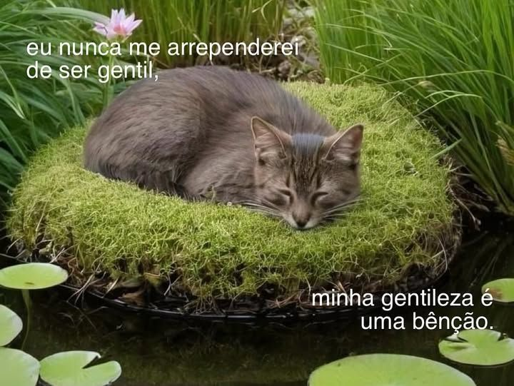

Sobre mim



Oioi, eu sou a Mery ♡
Moodboards são uma forma incrível de traduzir sentimentos e ideias em imagens, cores e texturas. Eles funcionam como um mapa visual da inspiração, reunindo referências de diferentes estéticas — seja minimalista, vintage, futurista, romântica ou alternativa
Eu gosto de varias coisas e vou compartilhar quase tudo em meu site (˶ˆᗜˆ˵)
Não sei por onde começar então vou falar de como eu gosto da Hanni, (integrante do njz)
Ela é tão incrivel aos meus olhos... ela canta, dança, compoe musica, toca instrumentos, é divertida e ainda tem hobbies manuais
é tudo o que eu amo e o que eu gostaria de me tornar, ela é uma inpiração para mim (ㅅ´ ˘ `).
Hanniㅤㅤㅤㅤㅤㅤㅤ
As vezes eu fico meio chateada porque eu não posso saber tocar todos os intrumentos, todos os idiomas, ser todas as profissoes, ler todos os livros, ter todos hobbies, ver todos os filmes...
....